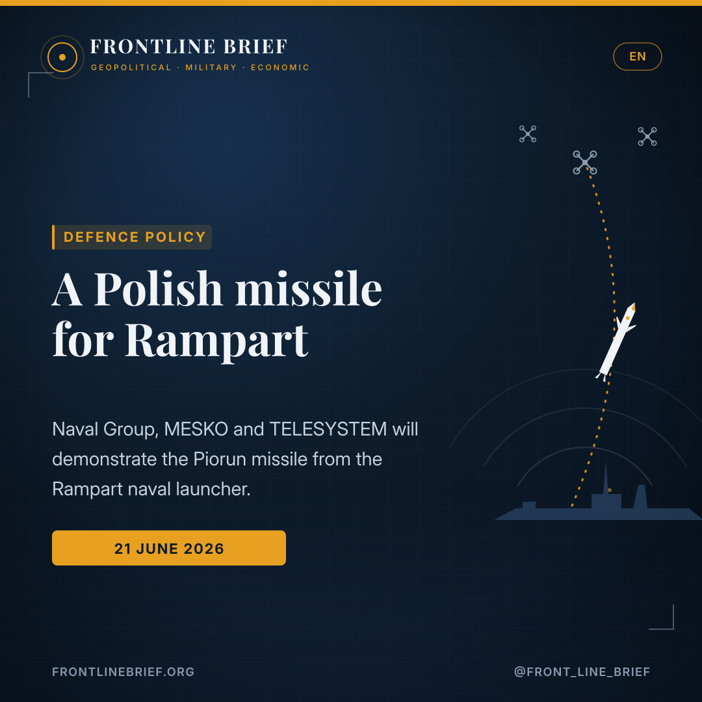

A Polish missile for Rampart: Naval Group, MESKO and TELESYSTEM agree to fire Piorun from the modular launcher
On 19 June 2026, Naval Group, MESKO and TELESYSTEM signed an agreement to demonstrate MESKO's Piorun missile from Naval Group's Rampart launcher during future naval exercises. It is the first step toward integrating the Polish short-range missile into the French launching system — and another piece of Europe's layered answer to the low-end air threat.



Modular, multi-effector
Naval Group's modular launcher (formerly MPLS), shown at Eurosatory 2026. Up to 1,000 kg payload across four interchangeable modules — 68/70 mm rockets, VSHORAD missiles and loitering munitions. First at-sea trials due October 2026.
Short-range, proximity-fuzed
A modern short-range surface-to-air missile built to counter low-flying threats — aircraft, helicopters, UAVs and winged rockets. A proximity-fuzed warhead destroys the target on a close pass, not only a direct hit.
A French prime, a Polish missile
Naval Group brings warship weapons integration; MESKO and TELESYSTEM bring missile production and supply. Together they pitch an integrated European answer to conventional and asymmetric threats across naval, air and land.
A Polish missile for Rampart
On 19 June 2026, Naval Group, MESKO and TELESYSTEM signed an agreement to demonstrate MESKO's Piorun missile from Naval Group's Rampart launcher during future naval exercises. The three companies describe it as the first step of a strategic cooperation aimed at integrating the Polish missile into the French launching system.
What Rampart is
Rampart is Naval Group's modular naval launcher, unveiled at Eurosatory 2026 and developed from the firm's earlier MPLS. It is built around interchangeable modules and can carry up to a 1,000 kg payload, mixing 68/70 mm rockets, VSHORAD missiles and loitering munitions for both naval and land use, with its first at-sea trials expected in October 2026. Adding Piorun would give the launcher a proven short-range air-defence round alongside its strike options.
What Piorun brings
MESKO's Piorun is a modern short-range surface-to-air missile designed to counter low-flying aerial threats, including aircraft, helicopters, UAVs and winged rockets. Its warhead is fitted with a proximity sensor, so it can destroy a target on a close pass rather than requiring a direct hit — a useful trait against small, agile drones.
A modular launcher that can mix rockets, loitering munitions and now a combat-proven short-range missile — cheap, layered air defence at sea.
An integrated European solution
The partners frame the project as an integrated European answer to conventional and asymmetric threats, addressing naval, air and land forces at once. Naval Group contributes its experience integrating weapons, launching systems and equipment on warships, while MESKO and TELESYSTEM bring expertise in producing and supplying the missile. The arrangement also deepens Franco-Polish industrial ties and raises Poland's profile as a missile supplier to a major French prime.
Why it matters
The logic echoes the containerised interceptors now heading to sea elsewhere in Europe: rather than spending a high-value round on every cheap threat, navies want a modular launcher that can field the right effector for the target — rockets and loitering munitions for some jobs, a short-range missile such as Piorun for low-flying aircraft and drones. The agreement is only a first step, and no demonstration date or naval exercise has been named, but the direction is a layered, lower-cost approach to the air threat at sea.
Ένας πολωνικός πύραυλος για το Rampart
Στις 19 Ιουνίου 2026, η Naval Group, η MESKO και η TELESYSTEM υπέγραψαν συμφωνία για τη δοκιμαστική εκτόξευση του πυραύλου Piorun της MESKO από τον εκτοξευτή Rampart της Naval Group σε μελλοντικές ναυτικές ασκήσεις. Οι τρεις εταιρείες την περιγράφουν ως το πρώτο βήμα μιας στρατηγικής συνεργασίας με στόχο την ενσωμάτωση του πολωνικού πυραύλου στο γαλλικό σύστημα εκτόξευσης.
Τι είναι το Rampart
Το Rampart είναι ο αρθρωτός ναυτικός εκτοξευτής της Naval Group, που παρουσιάστηκε στη Eurosatory 2026 και προέκυψε από το προγενέστερο MPLS της εταιρείας. Είναι σχεδιασμένο γύρω από εναλλάξιμες μονάδες και μπορεί να φέρει φορτίο έως 1.000 κιλών, συνδυάζοντας πυραύλους 68/70 χλστ., πυραύλους VSHORAD και loitering munitions για ναυτική και χερσαία χρήση, με τις πρώτες δοκιμές εν πλω να αναμένονται τον Οκτώβριο του 2026. Η προσθήκη του Piorun θα έδινε στον εκτοξευτή έναν δοκιμασμένο πύραυλο αντιαεροπορικής άμυνας μικρού βεληνεκούς δίπλα στις επιθετικές του επιλογές.
Τι προσφέρει το Piorun
Το Piorun της MESKO είναι ένας σύγχρονος πύραυλος επιφανείας-αέρος μικρού βεληνεκούς, σχεδιασμένος να αντιμετωπίζει χαμηλά ιπτάμενες απειλές: αεροσκάφη, ελικόπτερα, UAV και πτερυγιοφόρους πυραύλους. Η κεφαλή του διαθέτει αισθητήρα εγγύτητας, ώστε να καταστρέφει τον στόχο σε κοντινό πέρασμα και όχι μόνο με άμεσο πλήγμα — χρήσιμο χαρακτηριστικό απέναντι σε μικρά, ευέλικτα drones.
Ένας αρθρωτός εκτοξευτής που συνδυάζει ρουκέτες, loitering munitions και τώρα έναν δοκιμασμένο πύραυλο μικρού βεληνεκούς — φθηνή, πολυεπίπεδη αντιαεροπορική άμυνα στη θάλασσα.
Μια ολοκληρωμένη ευρωπαϊκή λύση
Οι εταίροι παρουσιάζουν το εγχείρημα ως μια ολοκληρωμένη ευρωπαϊκή απάντηση σε συμβατικές και ασύμμετρες απειλές, που αφορά ταυτόχρονα ναυτικές, αεροπορικές και χερσαίες δυνάμεις. Η Naval Group συνεισφέρει την εμπειρία της στην ενσωμάτωση όπλων, συστημάτων εκτόξευσης και εξοπλισμού σε πολεμικά πλοία, ενώ η MESKO και η TELESYSTEM φέρνουν την τεχνογνωσία στην παραγωγή και προμήθεια του πυραύλου. Η συμφωνία ενισχύει επίσης τους γαλλο-πολωνικούς βιομηχανικούς δεσμούς και αναβαθμίζει τον ρόλο της Πολωνίας ως προμηθευτή πυραύλων σε μεγάλη γαλλική εταιρεία.
Γιατί έχει σημασία
Η λογική θυμίζει τους αναχαιτιστές σε κοντέινερ που βγαίνουν στη θάλασσα αλλού στην Ευρώπη: αντί να δαπανά έναν ακριβό πύραυλο για κάθε φθηνή απειλή, το ναυτικό θέλει έναν αρθρωτό εκτοξευτή που να βάζει τον κατάλληλο φορέα για κάθε στόχο — ρουκέτες και loitering munitions για ορισμένες αποστολές, πύραυλο μικρού βεληνεκούς όπως το Piorun για χαμηλά ιπτάμενα αεροσκάφη και drones. Η συμφωνία είναι μόνο το πρώτο βήμα και δεν έχει ανακοινωθεί ημερομηνία ή άσκηση, όμως η κατεύθυνση είναι μια πολυεπίπεδη, χαμηλότερου κόστους προσέγγιση της αεροπορικής απειλής εν πλω.
Un missile polonais pour le Rampart
Le 19 juin 2026, Naval Group, MESKO et TELESYSTEM ont signé un accord visant à démontrer le missile Piorun de MESKO depuis le lanceur Rampart de Naval Group lors de futurs exercices navals. Les trois entreprises le présentent comme la première étape d'une coopération stratégique destinée à intégrer le missile polonais au système de lancement français.
Ce qu'est le Rampart
Le Rampart est le lanceur naval modulaire de Naval Group, dévoilé à Eurosatory 2026 et issu du précédent MPLS de la société. Conçu autour de modules interchangeables, il peut emporter jusqu'à 1 000 kg de charge utile, en combinant roquettes de 68/70 mm, missiles VSHORAD et munitions rôdeuses pour un usage naval et terrestre, ses premiers essais en mer étant attendus en octobre 2026. L'ajout du Piorun lui apporterait une munition de défense antiaérienne courte portée éprouvée, aux côtés de ses options de frappe.
Ce qu'apporte le Piorun
Le Piorun de MESKO est un missile surface-air courte portée moderne, conçu pour contrer les menaces aériennes à basse altitude : avions, hélicoptères, drones et roquettes ailées. Sa charge est dotée d'un capteur de proximité, lui permettant de détruire la cible lors d'un passage rapproché et pas uniquement par impact direct — un atout face aux petits drones agiles.
Un lanceur modulaire capable de mêler roquettes, munitions rôdeuses et désormais un missile courte portée éprouvé — une défense antiaérienne en couches, et bon marché, en mer.
Une solution européenne intégrée
Les partenaires présentent le projet comme une réponse européenne intégrée aux menaces conventionnelles et asymétriques, couvrant à la fois les forces navales, aériennes et terrestres. Naval Group apporte son expérience de l'intégration des armes, des systèmes de lancement et des équipements sur les navires de guerre, tandis que MESKO et TELESYSTEM apportent leur savoir-faire dans la production et la fourniture du missile. L'accord renforce aussi les liens industriels franco-polonais et rehausse le rôle de la Pologne comme fournisseur de missiles d'un grand maître d'œuvre français.
Pourquoi c'est important
La logique fait écho aux intercepteurs conteneurisés qui prennent la mer ailleurs en Europe : plutôt que de dépenser une munition de grande valeur contre chaque menace bon marché, les marines veulent un lanceur modulaire capable d'aligner le bon effecteur selon la cible — roquettes et munitions rôdeuses pour certaines missions, un missile courte portée comme le Piorun pour les aéronefs et drones volant bas. L'accord n'est qu'une première étape et aucune date ni aucun exercice n'a été annoncé, mais la direction est claire : une approche en couches et moins coûteuse de la menace aérienne en mer.
Et polsk missil til Rampart
Den 19. juni 2026 underskrev Naval Group, MESKO og TELESYSTEM en aftale om at demonstrere MESKO's Piorun-missil fra Naval Groups Rampart-affyringsenhed under kommende flådeøvelser. De tre virksomheder beskriver det som første skridt i et strategisk samarbejde, der sigter mod at integrere det polske missil i det franske affyringssystem.
Hvad Rampart er
Rampart er Naval Groups modulære flådeaffyringsenhed, præsenteret på Eurosatory 2026 og udviklet fra virksomhedens tidligere MPLS. Den er bygget op om udskiftelige moduler og kan bære op til 1.000 kg nyttelast, hvor den kombinerer 68/70 mm raketter, VSHORAD-missiler og loitering munitions til både flåde- og landbrug, med de første prøver til søs ventet i oktober 2026. At tilføje Piorun ville give affyringsenheden et gennemprøvet kortrækkende luftforsvarsmissil ved siden af dens angrebsmuligheder.
Hvad Piorun bringer
MESKO's Piorun er et moderne kortrækkende jord-til-luft-missil, designet til at imødegå lavtflyvende trusler: fly, helikoptere, droner og vingede raketter. Sprænghovedet er udstyret med en nærhedssensor, så det kan ødelægge målet ved en tæt passage og ikke kun ved et direkte træf — en nyttig egenskab mod små, adrætte droner.
En modulær affyringsenhed, der kan blande raketter, loitering munitions og nu et gennemprøvet kortrækkende missil — billigt, lagdelt luftforsvar til søs.
En integreret europæisk løsning
Partnerne fremstiller projektet som et integreret europæisk svar på konventionelle og asymmetriske trusler, der dækker flåde-, luft- og landstyrker på én gang. Naval Group bidrager med sin erfaring i at integrere våben, affyringssystemer og udstyr på krigsskibe, mens MESKO og TELESYSTEM bringer ekspertise i at producere og levere missilet. Aftalen uddyber også de fransk-polske industrielle bånd og hæver Polens profil som missilleverandør til en stor fransk hovedleverandør.
Hvorfor det betyder noget
Logikken minder om de containerbaserede interceptorer, der nu går til søs andre steder i Europa: i stedet for at bruge et dyrt missil mod hver billig trussel vil flåderne have en modulær affyringsenhed, der kan stille den rette effektor op mod målet — raketter og loitering munitions til nogle opgaver, et kortrækkende missil som Piorun mod lavtflyvende fly og droner. Aftalen er kun et første skridt, og ingen dato eller øvelse er nævnt, men retningen er en lagdelt, billigere tilgang til lufttruslen til søs.
En polsk robot till Rampart
Den 19 juni 2026 undertecknade Naval Group, MESKO och TELESYSTEM ett avtal om att demonstrera MESKO:s Piorun-robot från Naval Groups Rampart-avfyrningsenhet under kommande flottövningar. De tre företagen beskriver det som första steget i ett strategiskt samarbete som syftar till att integrera den polska roboten i det franska avfyrningssystemet.
Vad Rampart är
Rampart är Naval Groups modulära avfyrningsenhet för fartyg, presenterad på Eurosatory 2026 och utvecklad ur företagets tidigare MPLS. Den är uppbyggd kring utbytbara moduler och kan bära upp till 1 000 kg nyttolast, där den kombinerar 68/70 mm raketer, VSHORAD-robotar och loitering munitions för både marin och markbunden användning, med de första provningarna till sjöss väntade i oktober 2026. Att lägga till Piorun skulle ge avfyrningsenheten en beprövad korträckviddig luftvärnsrobot vid sidan av dess anfallsalternativ.
Vad Piorun tillför
MESKO:s Piorun är en modern korträckviddig yt-till-luft-robot, byggd för att möta lågflygande hot: flygplan, helikoptrar, drönare och vingade raketer. Stridsdelen är försedd med en närhetssensor, så att den kan förstöra målet vid en nära passage och inte bara genom en direktträff — en användbar egenskap mot små, snabba drönare.
En modulär avfyrningsenhet som kan blanda raketer, loitering munitions och nu en beprövad korträckviddig robot — billigt, skiktat luftförsvar till sjöss.
En integrerad europeisk lösning
Parterna framställer projektet som ett integrerat europeiskt svar på konventionella och asymmetriska hot, som omfattar marin-, flyg- och markstyrkor på en gång. Naval Group bidrar med sin erfarenhet av att integrera vapen, avfyrningssystem och utrustning på örlogsfartyg, medan MESKO och TELESYSTEM bidrar med kompetens i att tillverka och leverera roboten. Avtalet fördjupar också de fransk-polska industriella banden och höjer Polens profil som robotleverantör till en stor fransk huvudleverantör.
Varför det spelar roll
Logiken påminner om de containerbaserade interceptorerna som nu går till sjöss på andra håll i Europa: i stället för att lägga en dyr robot mot varje billigt hot vill flottorna ha en modulär avfyrningsenhet som kan ställa rätt verkansdel mot målet — raketer och loitering munitions för vissa uppgifter, en korträckviddig robot som Piorun mot lågflygande flygplan och drönare. Avtalet är bara ett första steg, och inget datum eller någon övning har nämnts, men riktningen är ett skiktat, billigare grepp om lufthotet till sjöss.
Sources
- Naval News — Naval Group, MESKO and TELESYSTEM sign a sea firing trials agreement for demonstration (19 June 2026)
- Naval Group — press release on the Piorun / Rampart cooperation
- Naval News — Naval Group's MPLS close-in weapon system becomes Rampart (June 2026)
- MESKO — Piorun short-range surface-to-air missile